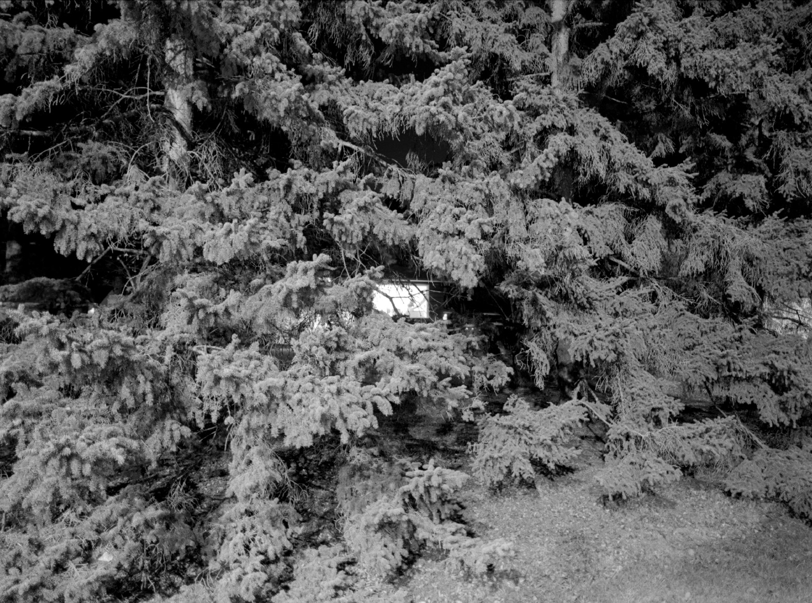
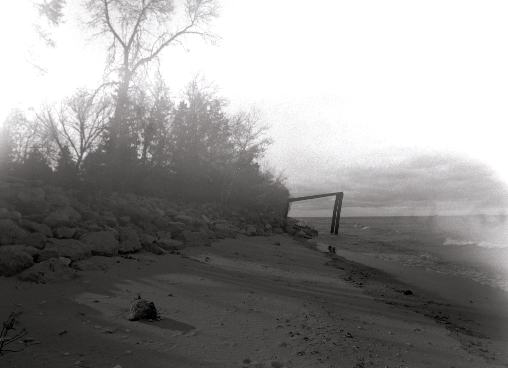
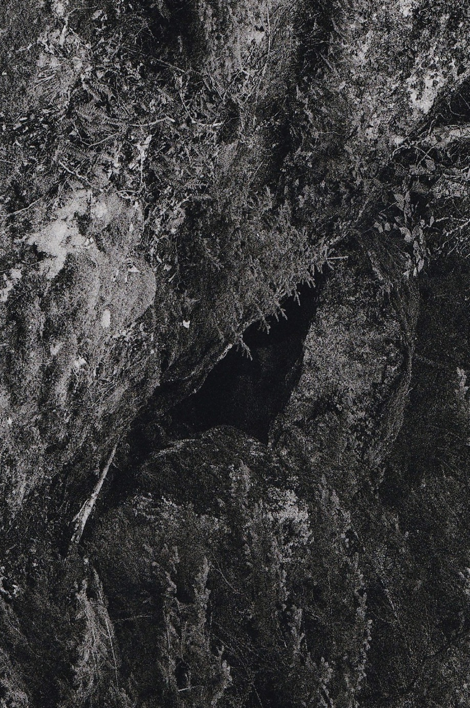
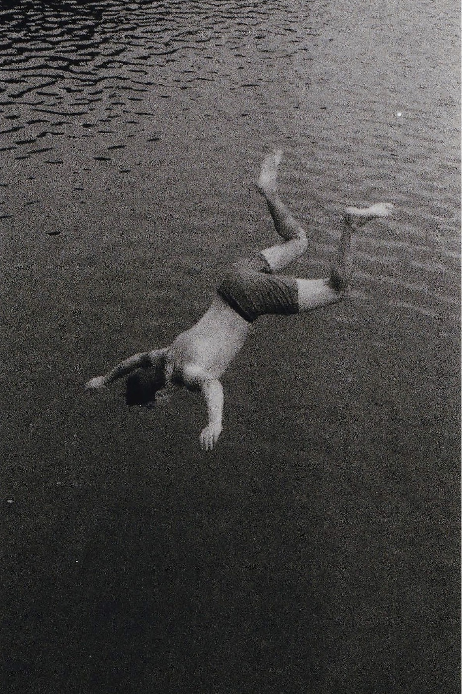

Revisiting
Flash Photographic Festival
The Handsome Daughter, Winnipeg, Manitoba
April 1–30, 2022
Curated by Diana Thorneycroft.
Revisiting is about how we understand our past through the ways we capture and represent places in the present. Through the act of returning to and photographing spaces from my childhood and more recent histories, the work investigates the relationship between site, memory, and presence.
```




